Osiedle Wilno | 3 pokoje | 2 tarasy | Garaż | Gotowe do wprowadzenia
Zamieszkaj na Osiedlu Wilno, w urokliwej części Zacisza, w zielonej części Targówka – wśród hortensji, kwiatów i przyjaznych sąsiadów.
To miejsce, w którym od razu czujesz spokój, przestrzeń i domowy klimat.
68 m² – idealny układ dla pary lub rodziny:
– salon z wyjściem na duży taras
– widna, przestronna kuchnia z zabudową i pełnym AGD
– dwie sypialnie
– oddzielna łazienka z wanną i parawanem prysznicowym
– osobna toaleta
– dwa słoneczne balkony/tarasy – idealne na poranną kawę
Mieszkanie jest zadbane, odświeżone, w neutralnej kolorystyce – gotowe do wprowadzenia.
Zostaje cała zabudowa kuchenna, sprzęty AGD oraz wyposażenie sypialni.
Blaty granitowe w kuchni i łazience.
We wszystkich pokojach jest położona lita deska w doskonałym stanie.
Otoczenie:
Ciche, zielone osiedle z pięknym patio, placem zabaw i bujną roślinnością.
Na terenie osiedla znajdują się dwa przedszkola – idealne rozwiązanie dla rodzin z dziećmi.
W okolicy: las, park, sklepy, restauracje, Rossmann, Pepco – wszystko w zasięgu spaceru.
Do metra Trocka – 6 minut, a do metra Zacisze – 7 minut samochodem.
Na osiedlu znajduje się również przystanek autobusowy.
Cena mieszkania: 1 100 000 zł
Dwa miejsca postojowe w garażu podziemnym – po 40 000 zł każde (dodatkowo płatne).
Zadzwoń i umów się na prezentację – to mieszkanie, które naprawdę warto zobaczyć.
Wiktoria Tejs
Manager kreatywny
Agentka Nieruchomości
M: +48 538 562 626
E:
W:
Zapraszam serdecznie!
Varsovia Capital Real Estate Sp. z o.o.
Oferta wysłana z programu dla biur nieruchomości ASARI CRM ()
 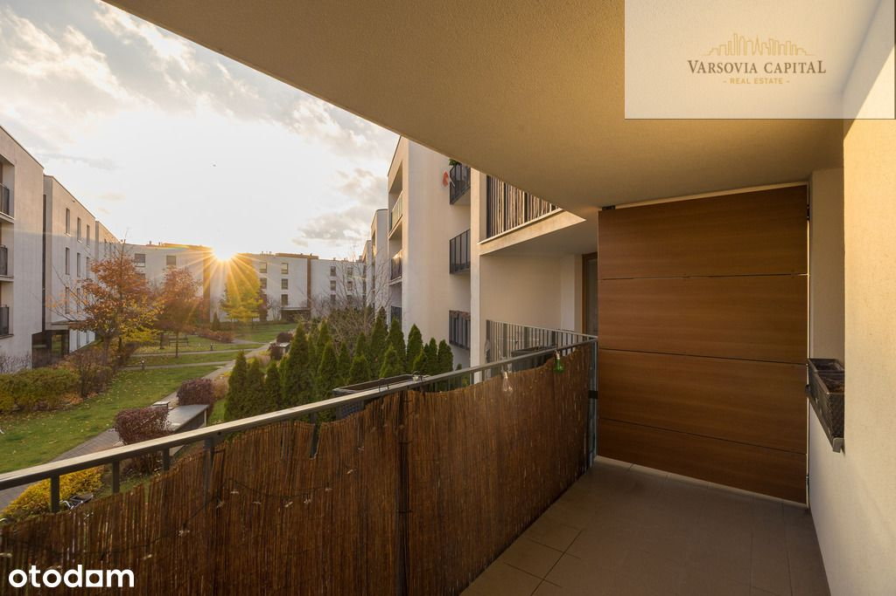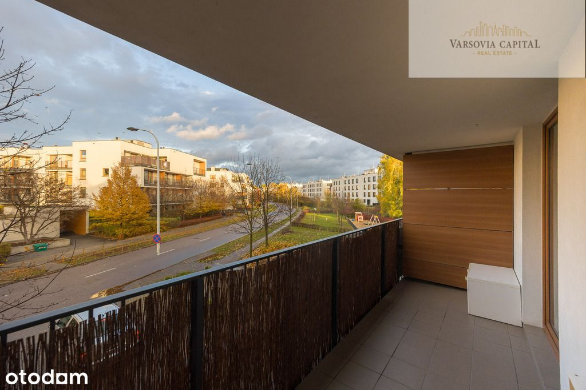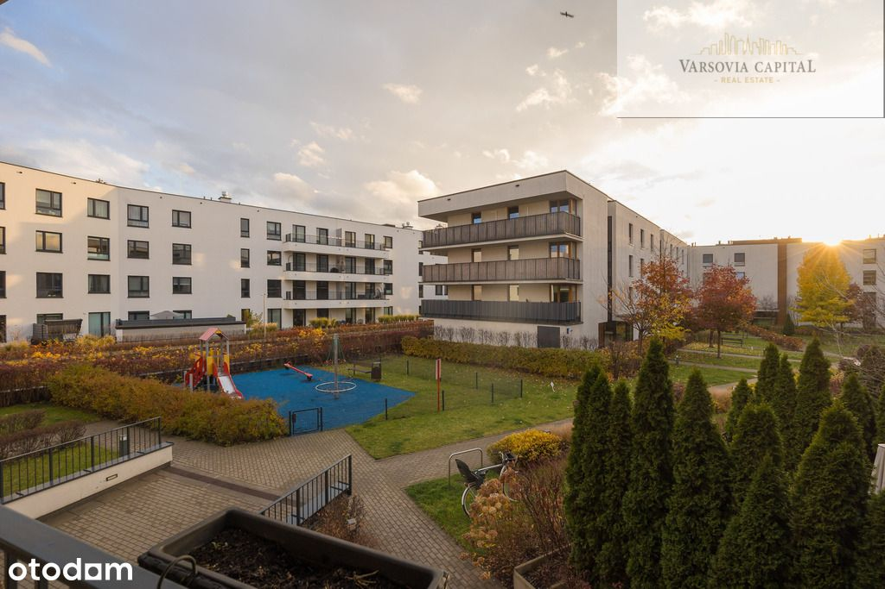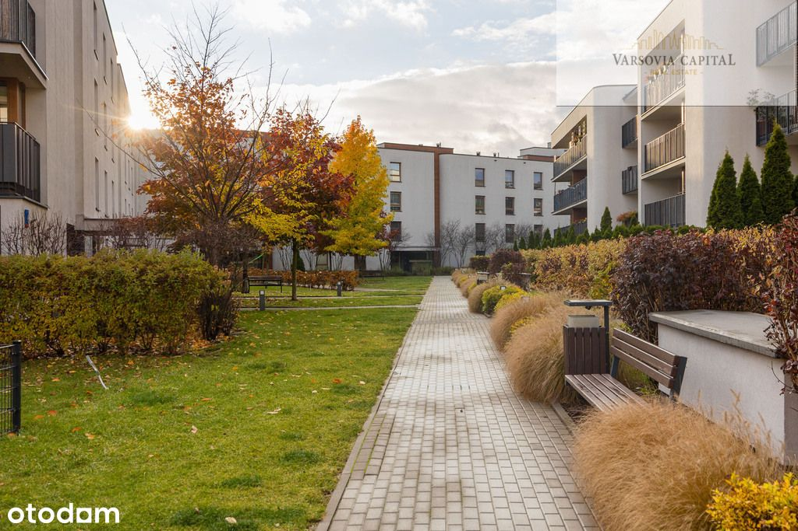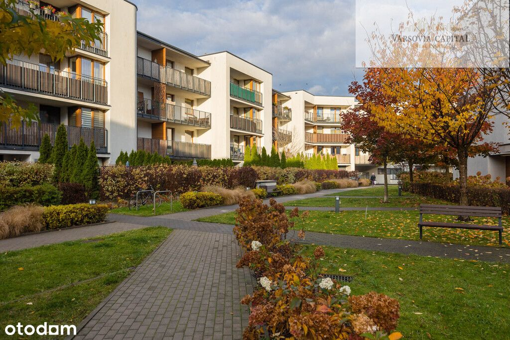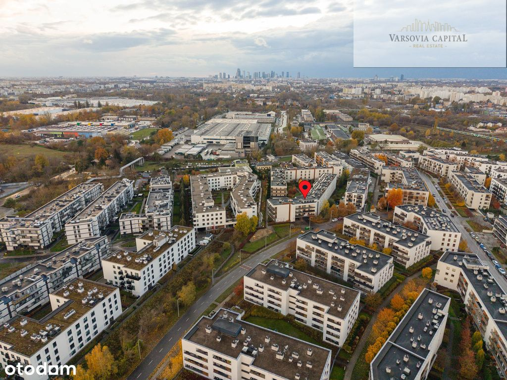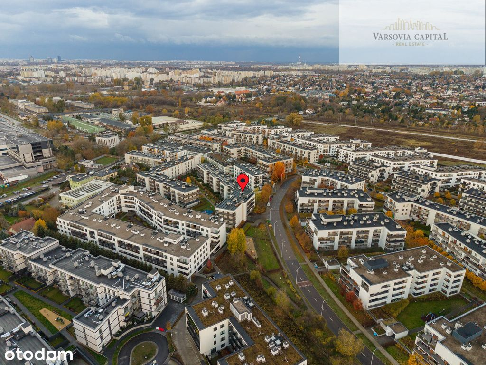
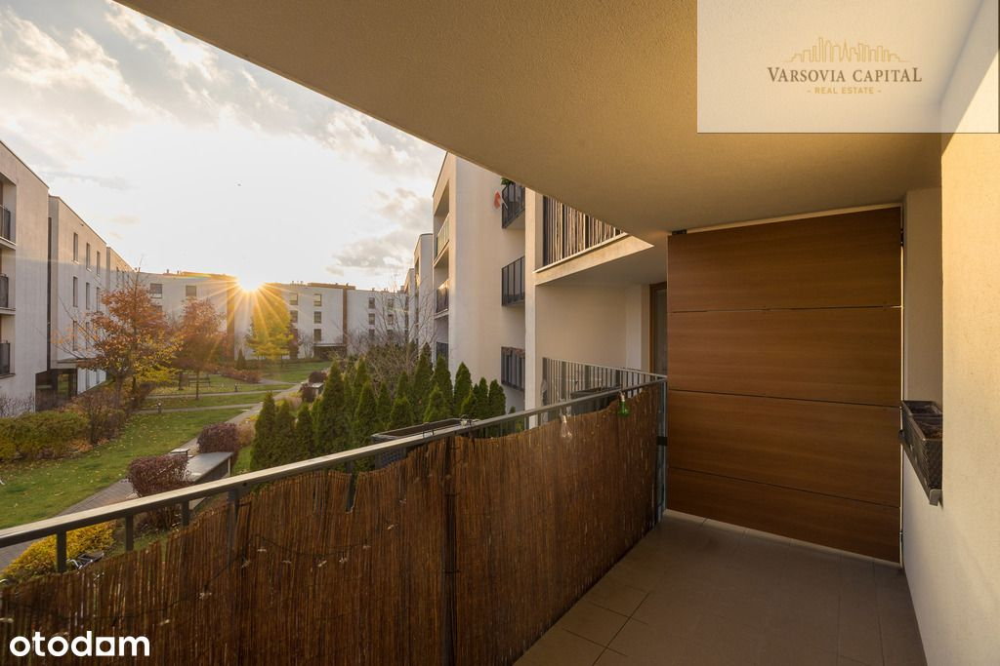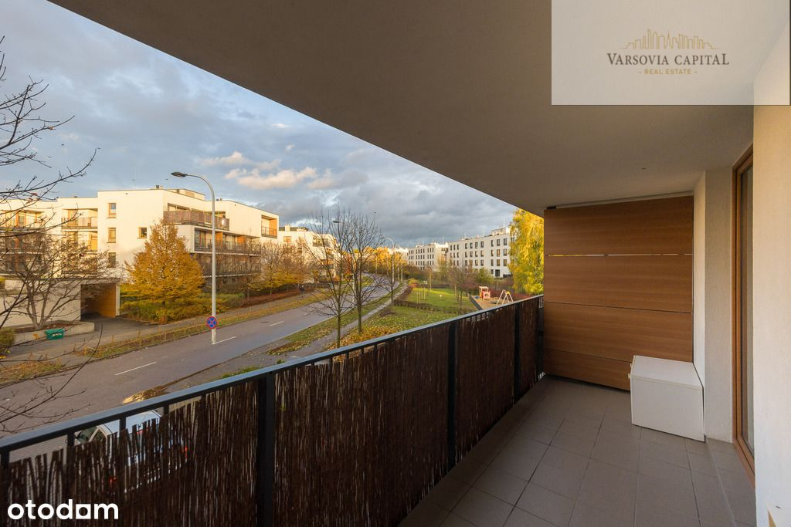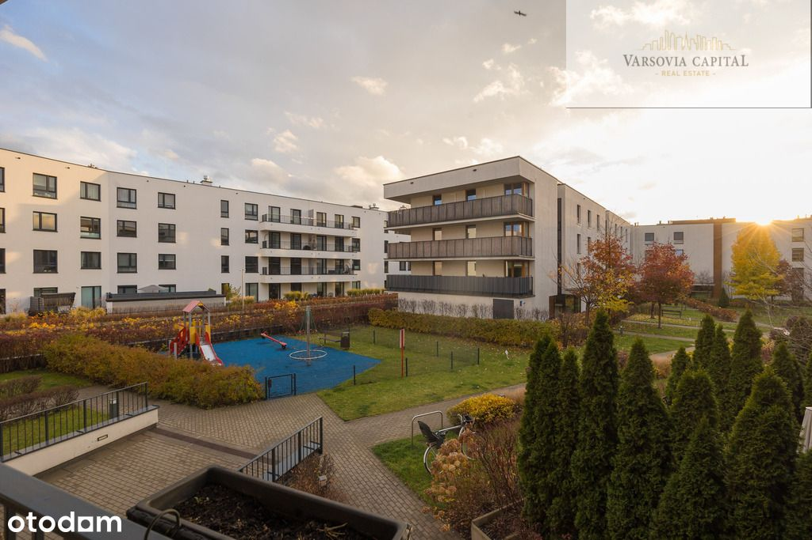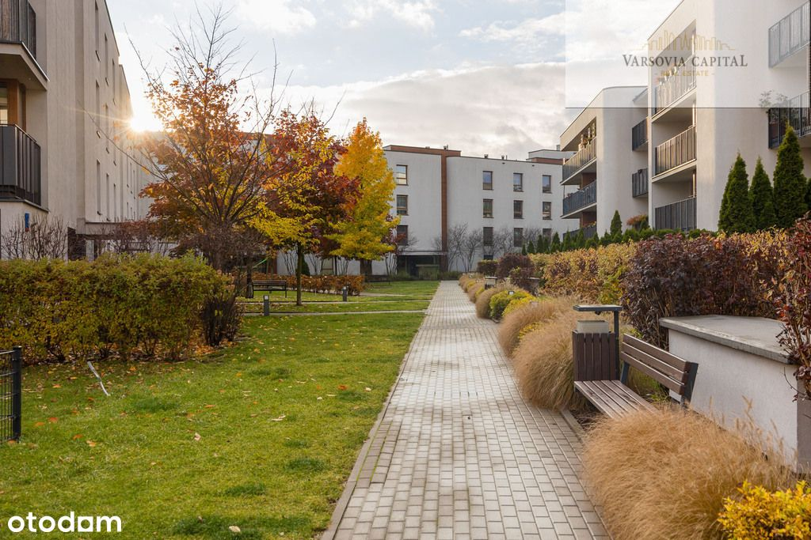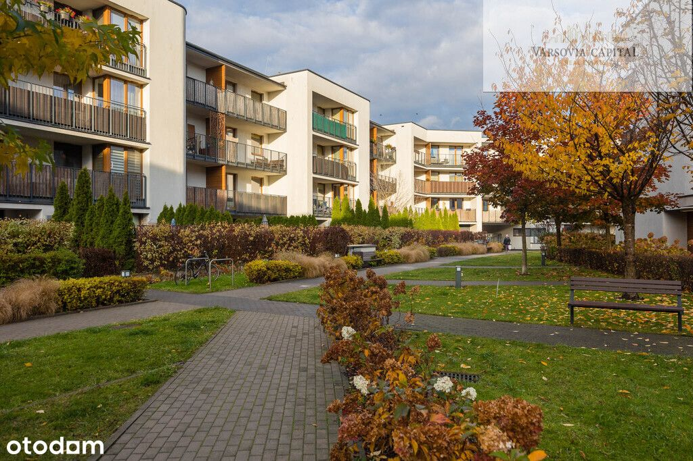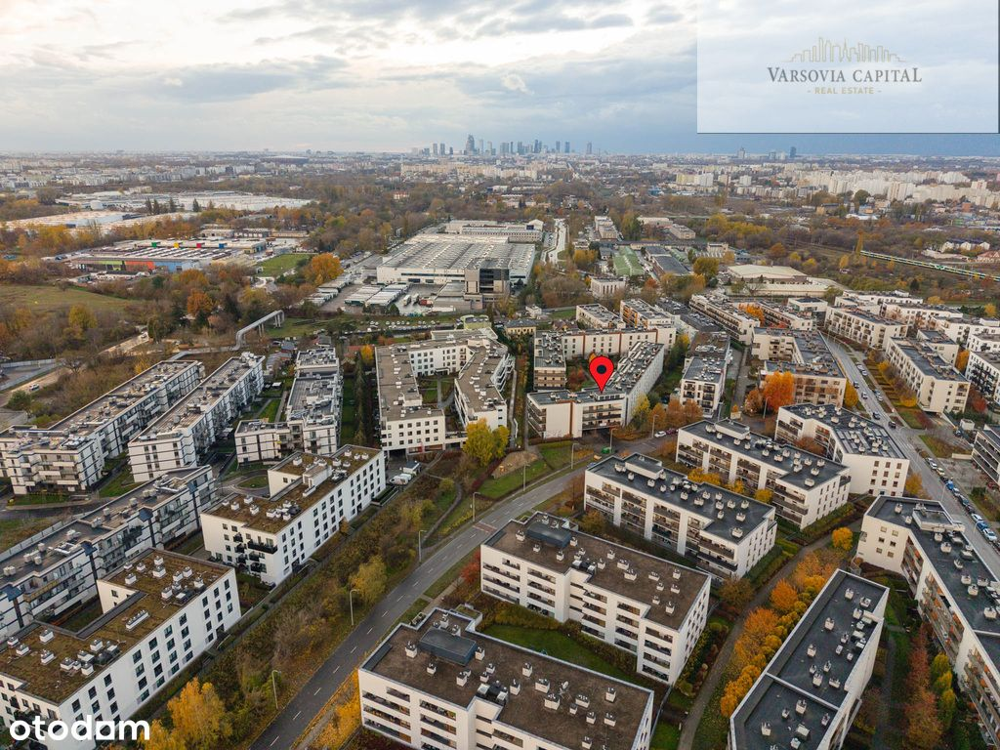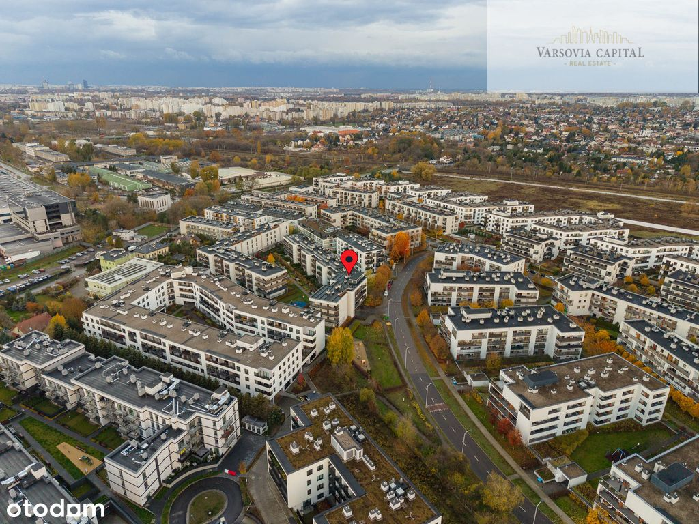